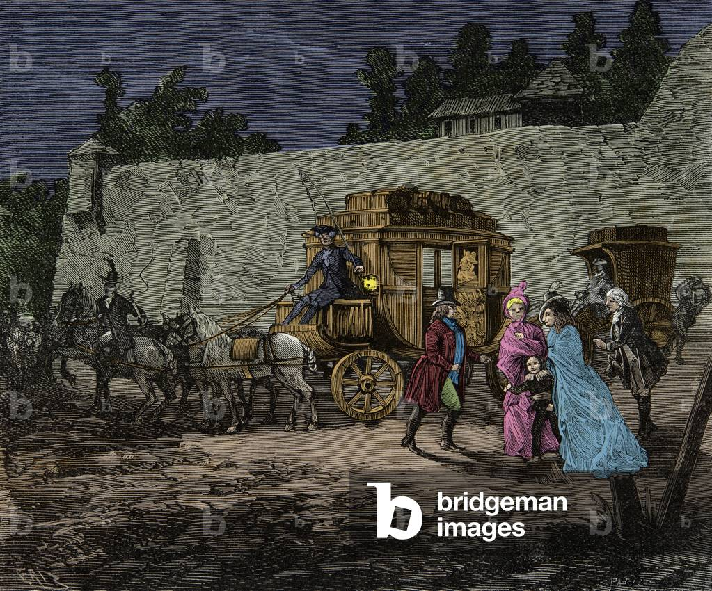
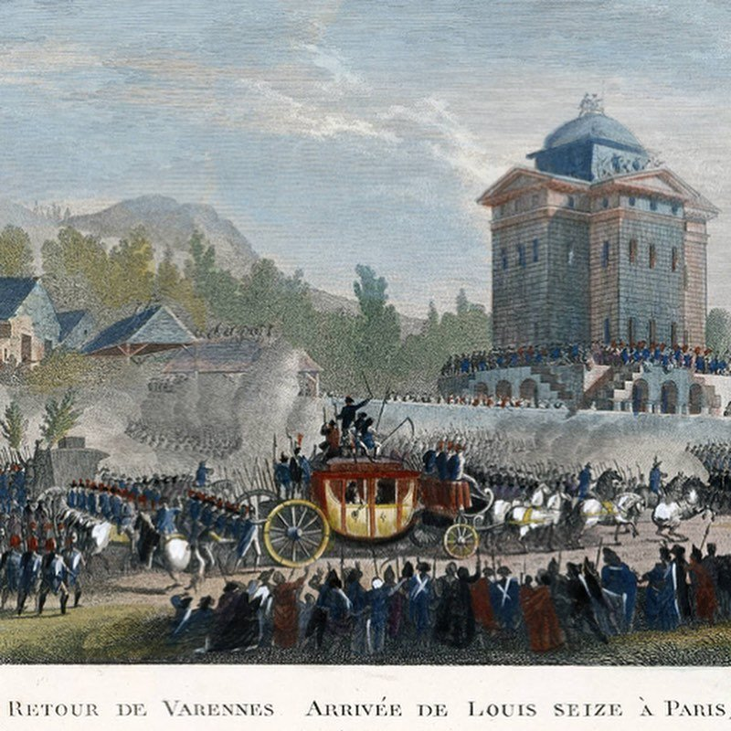
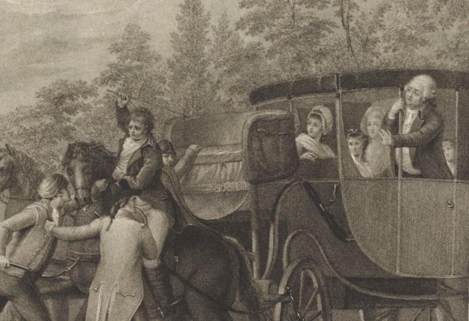
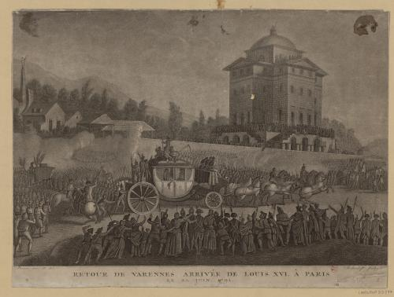
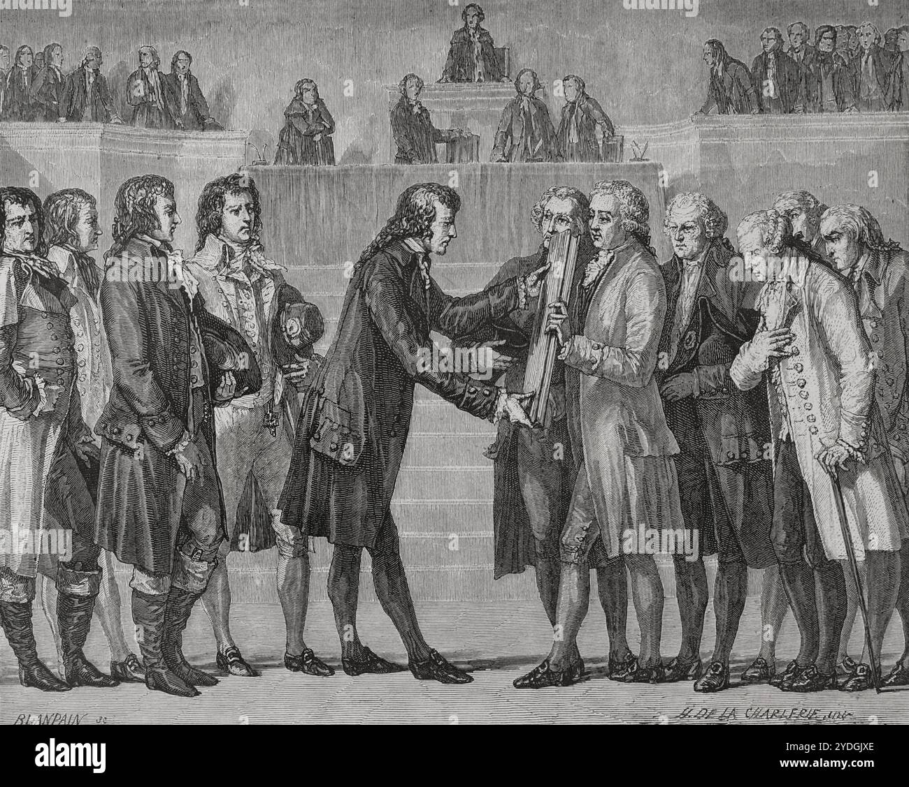

Vous êtes Louis XVI, Roi de France. Nous sommes le 20 juin 1791. Cette nuit, vous tentez de fuir Paris avec votre famille royale pour atteindre la forteresse de Montmédy. Le cortège royal quitte Paris discrètement — mais la ville de Varennes vous attend.
⚖ Système de points
- 🎭 Discrétion : 0 ou moins = capture rapide
- 👑 Popularité élevée = foule moins violente
- 🕊️ Humanité : évite les effusions de sang
- ⚔️ Courage : affronter l'adversité

La nuit est tombée sur Paris. Dans les couloirs sombres du palais des Tuileries, vous rassemblez votre famille en silence. Marie-Antoinette serre contre elle le petit Dauphin endormi. Madame Élisabeth, votre sœur, prie à voix basse. Madame Royale, votre fille aînée, vous regarde avec des yeux emplis de confiance.
Le plan a été préparé par le comte Axel de Fersen, fidèle parmi les fidèles. Une berline vous attend près du guichet de Marigny. Mais le danger est immense : La Fayette a posté des gardes nationaux partout. Le moindre bruit pourrait donner l'alerte.
Fersen vous murmure : « Sire, il est temps. Deux options s'offrent à vous pour quitter le palais. »
Vous empruntez un étroit passage souterrain qui mène sous les jardins. L'air est humide, les murs suintent. La reine retient un cri quand une araignée tombe sur son épaule. Le Dauphin dort toujours, bercé par les pas feutrés de sa mère.
Après vingt longues minutes dans l'obscurité, vous émergez près du guichet de Marigny. La berline de Fersen est là, attelée de six chevaux, dissimulée sous les arbres. Le cocher, un homme de confiance, vous fait signe.
Mais au moment de monter, Fersen vous prévient : « Sire, un problème. La berline est immense — elle attirera l'attention. Je peux trouver deux voitures plus petites, mais cela prendra une heure de plus. »
Vous enfilez les vêtements d'un valet. Marie-Antoinette porte la tenue sombre d'une gouvernante. Votre sœur Élisabeth joue le rôle d'une femme de chambre. Les enfants sont emmitouflés dans des couvertures ordinaires.
Le cœur battant, vous franchissez la porte principale. Un garde national vous dévisage. « Hé ! Toi ! » lance-t-il. Vous vous figez. Le temps s'arrête. Puis il ajoute : « Tu as oublié ta lanterne, imbécile. » Et il vous en tend une. Vous murmurez un remerciement et continuez.
La berline attend au coin de la rue. Fersen vous presse : « Vite, Sire. L'aube ne nous attendra pas. »
Le cortège s'élance dans la nuit noire. Les routes de France défilent sous les roues. À Bondy, on change les chevaux. À Meaux, la reine s'endort enfin. Le Dauphin rêve, ignorant le destin qui se joue.
Les heures passent. L'aube se lève sur la campagne champenoise. Les villages s'éveillent. À Châlons-en-Champagne, un maître de poste vous dévisage longuement en changeant les chevaux. Vous reconnaît-il ? Il ne dit rien… pour l'instant.
Plus loin, à Sainte-Menehould, le maître de poste Jean-Baptiste Drouet compare votre visage à l'assignat qu'il tient en main — un billet portant le profil du roi. Ses yeux s'écarquillent. Il sait.
Drouet enfourche un cheval et galope vers Varennes pour vous devancer. La course contre la montre commence.
Vous ordonnez au cocher de quitter la route principale. La berline s'enfonce dans des sentiers boueux et étroits bordés de forêts sombres. Les branches griffent les parois du carrosse. Marie-Antoinette serre le Dauphin plus fort.
L'obscurité est totale. Soudain, une roue se brise dans une ornière profonde ! Le carrosse s'arrête brutalement. Le cocher jure. Il faudra au moins une heure pour réparer.
Pendant ce temps, au loin, vous entendez le galop de Drouet qui file vers Varennes par la route principale. Vous avez gagné de la discrétion, mais perdu un temps précieux.
La roue est finalement réparée. Vous reprenez votre route et arrivez aux abords de Varennes. Il est presque minuit. La ville semble endormie… ou vous guette-t-elle ?

Le cocher fouette les chevaux avec rage. La berline bondit sur la route, les passagers sont secoués violemment. Les enfants se réveillent en pleurant. Marie-Antoinette vous lance un regard où se mêlent la peur et la confiance.
Les villages défilent dans la nuit : Clermont, Islettes… À chaque relais, vous perdez de précieuses minutes. Les chevaux sont épuisés. Les postillons murmurent entre eux — ils ont reconnu la livrée royale.
Enfin, Varennes apparaît au détour d'un virage. Mais quelque chose cloche : un barrage de charrettes bloque l'entrée du pont ! Drouet vous a devancé. La ville est alertée. Des lumières s'allument aux fenêtres.
Malgré vos efforts, la nouvelle de votre passage s'est répandue. Le tocsin sonne dans la nuit ! Les habitants de Varennes sortent dans les rues, armés de fourches, de piques et de vieux mousquets. Des torches éclairent la scène d'une lumière tremblante et orangée.
Le procureur de la commune, Jean-Baptiste Sauce, s'approche du carrosse. C'est un homme simple, un épicier devenu magistrat par la force des événements. Il vous demande poliment vos papiers. Votre faux passeport indique que vous êtes la « baronne de Korff ».
Sauce examine le document, hésite. La foule gronde derrière lui. Un vieil homme lance : « C'est le roi ! J'ai servi à Versailles, je le reconnais ! » Sauce vous regarde droit dans les yeux.

Le carrosse s'élance vers le centre de Varennes. Les chevaux hennissent, les pavés résonnent dans la nuit. Mais le pont sur l'Aire est barricadé ! Des charrettes renversées et des tonneaux bloquent le passage.
Vos gardes du corps, les trois mousquetaires déguisés en courriers, tirent leurs épées. La foule recule un instant, terrorisée. Mais ils sont des centaines et vous n'êtes qu'une poignée.
Le procureur Sauce arrive en courant, suivi de la Garde nationale locale. Il lève la main : « Au nom de la Nation, arrêtez-vous ! » Derrière lui, des hommes armés pointent leurs fusils vers la berline. Marie-Antoinette pousse un cri.

Vous maintenez votre couverture : « Je suis la baronne de Korff, et j'exige qu'on nous laisse passer ! » Sauce hésite. Le document semble en ordre. Mais la foule n'est pas dupe.
Un ancien soldat s'avance et désigne un assignat : « Regardez ! C'est le même visage ! » Le murmure parcourt la foule comme une vague. Sauce se tourne vers vous, embarrassé. « Madame… ou plutôt, Sire… je dois vous demander de patienter chez moi, le temps de vérifier. »
Il est inutile de résister davantage. On vous conduit dans la maison de Sauce, épicier de son état, transformée en prison improvisée pour un roi.
Vous descendez du carrosse avec toute la majesté dont vous êtes capable. « Mes amis, oui, je suis votre roi. » Un silence de mort tombe sur la place. Puis un murmure émerveillé parcourt la foule.
Des hommes retirent leur chapeau. Des femmes font la révérence par habitude. Un vieil homme tombe à genoux. Mais d'autres serrent leurs armes plus fort. La Nation et le Roi se font face dans la nuit de Varennes.
Sauce, profondément troublé, vous invite chez lui : « Sire, venez vous reposer chez moi. Il fait froid pour les enfants. Nous verrons demain. » C'est une invitation qui ressemble à une arrestation.
« Rangez vos armes, messieurs. Je ne veux pas qu'une seule goutte de sang français coule par ma faute. » Vos gardes obéissent, à contrecœur. La foule, stupéfaite par cette noblesse, baisse aussi ses armes.
Le procureur Sauce s'avance, visiblement ému. Il reconnaît votre visage — le roi qu'il a vu sur les assignats, sur les gravures. Mais il voit aussi un père qui protège ses enfants endormis.
« Sire… venez chez moi. Les enfants ont besoin de repos. Nous réglerons cette affaire au matin. »
« En avant ! » Vos gardes éperonnent leurs chevaux et chargent la barricade. Des coups de feu éclatent dans la nuit ! Un garde tombe de sa monture. La foule hurle et se disperse dans la panique.
Le carrosse percute les charrettes, les tonneaux volent en éclats. Mais le passage est trop étroit ! La berline reste coincée. Les chevaux se cabrent, affolés par les cris et les coups de feu. Marie-Antoinette protège les enfants de son corps.
En quelques minutes, la Garde nationale vous encercle. Des dizaines de fusils pointés sur vous. Un soldat blesse l'un de vos gardes. Le sang coule sur les pavés de Varennes. C'est terminé.
La maison de Sauce est petite, encombrée de tonneaux et de marchandises. L'épicière, Madame Sauce, s'affaire à préparer un lit pour les enfants royaux. Elle est émue de voir la reine, si belle et si pâle, bercer le Dauphin dans cette arrière-boutique misérable.
Marie-Antoinette murmure : « Mon Dieu, en sommes-nous réduits à cela ? » Mais Madame Sauce apporte du lait chaud pour les enfants, et la reine la remercie avec une grâce qui touche tous les témoins.
Les heures passent. La nuit s'écoule dans une attente insupportable. Deux émissaires de l'Assemblée nationale arrivent à l'aube avec un décret formel : le roi doit rentrer à Paris. Mais le marquis de Bouillé, votre allié, a aussi envoyé un message — ses hussards approchent.
C'est une course entre les révolutionnaires et les royalistes. Que faites-vous ?
Dans l'intimité de la maison Sauce, vous tentez votre chance. Vous sortez une bourse lourde d'or et la posez sur la table. « Monsieur Sauce, une fortune pour vous et votre famille. Laissez-nous partir avant l'aube. »
Sauce regarde l'or, puis vous, puis l'or à nouveau. Ses mains tremblent. C'est plus d'argent qu'il n'en verra jamais. Sa femme lui saisit le bras : « Prends-le ! Qu'est-ce que ça peut faire ? »
Mais Sauce secoue la tête : « Je ne puis, Sire. La Garde nationale est devant ma porte. Si je vous laisse partir, c'est moi qu'on pendra. » Il repousse la bourse. L'or n'achète pas la liberté.
L'aube approche. Les émissaires de l'Assemblée arrivent bientôt.
Vous montez sur le marchepied du carrosse pour dominer la foule. Le silence se fait. Toutes les torches éclairent votre visage. C'est le moment de vérité.
« Peuple de Varennes ! Je suis Louis, votre roi, et aussi votre père. Je ne fuis pas mon peuple — je fuis ceux qui veulent détruire la France ! Les factieux de Paris veulent ma tête, mais c'est la vôtre qu'ils prendront ensuite ! »
Des voix s'élèvent : certaines crient « Vive le Roi ! », d'autres « Vive la Nation ! ». La foule est divisée. Un moment de flottement extraordinaire où l'Histoire hésite. Sauce saisit votre bras : « Sire, venez chez moi. La nuit porte conseil. »

Le cortège reprend la route vers Paris, escorté par des milliers de gardes nationaux et une foule immense. Le voyage du retour est une épreuve d'humiliation. Trois jours de route sous la chaleur de juin, dans un silence de plomb.
À chaque village, la foule se masse en silence sur les bords de la route. Personne n'ôte son chapeau. C'est l'ordre de l'Assemblée : ne montrer aucun signe de respect au roi fugitif. Ce silence est plus terrible que la haine.
Marie-Antoinette, épuisée, découvre une mèche de cheveux blancs dans son reflet — elle a vieilli de dix ans en trois jours. Le petit Dauphin demande : « Papa, pourquoi les gens ne nous aiment plus ? »
Aux portes de Paris, la foule est dense, menaçante, mais disciplinée. Des affiches proclament : « Quiconque applaudira le roi sera battu. Quiconque l'insultera sera pendu. » Le 25 juin 1791, vous entrez aux Tuileries — non plus en roi, mais en prisonnier.
Mais la confiance est brisée à jamais. Le peuple sait désormais que son roi a voulu fuir. Le 10 août 1792, les Tuileries sont prises d'assaut. Le 21 janvier 1793, vous montez à l'échafaud avec le courage d'un homme qui a fait la paix avec son destin.
Votre dignité lors du retour et votre refus de faire couler le sang vous valent le respect de certains — même parmi vos ennemis. L'Histoire retiendra un roi honnête, dépassé par son époque, mais jamais cruel.

Vous gagnez du temps. Chaque minute qui passe rapproche les hussards du marquis de Bouillé. Vous posez des questions, demandez à manger, réclamez du vin pour les enfants. Sauce, embarrassé, obtempère.
Soudain, le bruit de sabots ! Quarante hussards de Bouillé arrivent à Varennes ! Leur colonel, le vicomte de Damas, entre dans la maison Sauce, l'épée au poing : « Sire, nous sommes là ! Donnez l'ordre et nous vous libérons ! »
Mais dehors, des milliers d'habitants encerclent la maison. La Garde nationale a braqué un canon sur la porte. Si les hussards chargent, ce sera un massacre. Les soldats eux-mêmes hésitent — fraterniseront-ils avec le peuple ou obéiront-ils ?
Les hussards chargent ! Le canon tonne, mais le tir passe au-dessus du carrosse. Dans la confusion, vos soldats ouvrent un passage. La berline s'élance hors de Varennes dans un fracas de sabots et de cris.
Vous galopez vers la frontière. Le soleil se lève sur la Meuse. Les couleurs de l'Autriche apparaissent au loin. Marie-Antoinette pleure de soulagement. Le Dauphin s'exclame : « Papa, on a gagné ? »
Vous êtes libre. Mais derrière vous, la France s'embrase.
Mais à quel prix ? Le sang a coulé à Varennes. L'Assemblée vous déclare traître à la Nation. La guerre civile éclate, puis la guerre européenne. Des milliers meurent dans les batailles qui suivent.
Vous avez sauvé votre famille… mais l'Histoire vous jugera comme le roi qui a abandonné son peuple. La France ne vous pardonnera jamais — et peut-être que vous non plus.
Vous vous rendez après la violence. Le retour à Paris est un calvaire. La foule, informée des coups de feu, vous accueille avec une haine froide. Des pierres sont lancées sur le carrosse. Marie-Antoinette est blessée au front.
L'Assemblée vous suspend de toutes vos fonctions. La monarchie est morte — il ne reste que l'attente de l'échafaud.
La violence que vous avez autorisée contre votre propre peuple est devenue l'argument décisif de votre condamnation. Les Montagnards citent Varennes comme preuve que le roi était l'ennemi du peuple. Votre épouse suivra le même chemin le 16 octobre.
L'Histoire retiendra un roi qui, dans sa fuite, a montré qu'il ne comprenait pas son époque. La Révolution n'a plus eu besoin de justification.
Vos gardes se battent avec l'énergie du désespoir. Mais face à des centaines d'hommes en armes, le combat est inégal. Un par un, vos fidèles tombent. Le sang royal coule sur les pavés de Varennes.
Vous-même êtes blessé à l'épaule par un coup de baïonnette. Marie-Antoinette couvre les enfants de son corps. Le Dauphin hurle de terreur. C'est la fin.
Quand le calme revient, on vous traîne hors du carrosse. Votre famille est arrachée de vos bras. Le retour à Paris sera le plus humiliant de l'Histoire de France.
Votre choix de combattre le peuple a donné raison à tous ceux qui vous accusaient d'être un despote. Les morts de Varennes deviennent des martyrs de la Révolution. Votre nom est maudit.
Cette fin est la plus tragique de toutes — ni courage véritable, ni humanité, ni sagesse. Seulement la peur d'un homme acculé qui a choisi la violence au lieu de la grandeur.